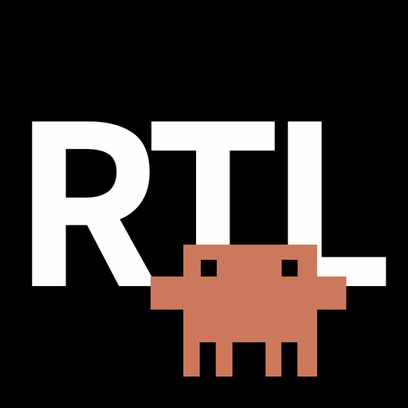

Right-to-left text for Hebrew & Arabic on Claude
Download on the App StoreDetects Hebrew and Arabic in Claude's answers and flips them to the correct direction — no clicking required.
Mixed replies stay readable: each paragraph, list item and heading is aligned on its own.
Works while Claude is still typing, so responses read correctly in real time.
No tracking, no data collection, no special permissions. It only runs on claude.ai.
Without the extension, Hebrew and Arabic render left-to-right and break apart:
With Claude RTL Fix, the same text reads naturally: